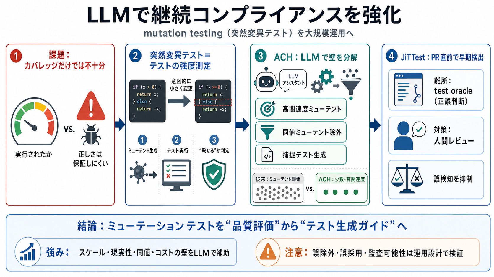

Meta Applies Mutation Testing with LLM to Improve Compliance Coverage - InfoQ
## InfoQ Software Architects' Newsletter. Live Webinar and Q&A: Engineering for the Agentic Era: How to Spec, Build, Tes…

## InfoQ Software Architects' Newsletter. Live Webinar and Q&A: Engineering for the Agentic Era: How to Spec, Build, Tes…
* Following our keynote presentations at FSE 2025 and Eurostar 2025, we’re delving further into the development of Meta’…
## Engineering at Meta's Post. ### **Engineering at Meta**. Mutation testing is considered to be one of the most powerfu…
# LLM-Powered Mutation Testing for Automated Test Generation. Meta developed ACH (Automated Compliance Hardening), an LL…
by P Bhandula · 2025 — LLM-Based Unit Test Synthesis – Meta's ACH uses an LLM test generator agent to produce tests that…